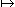
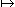
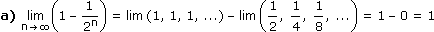

X. FOLGEN UND GRENZPROZESSE
A. Folgen und Bildungsgesetze
B. Arithmetische Folgen
C. Geometrische Folgen
D. Exkurs: Finanzmathematik
E. Grenzwert und Cauchy-Kriterium
F. Stetigkeit von Funktionen
 Ergänzungen und Details
Ergänzungen und DetailsEine Folge ist eine endliche oder unendliche Auflistung mathematischer Objekte, die typischerweise mit 0 oder 1 beginnend durchnummeriert sind. Im Folgenden betrachten wir unendliche Folgen, bei denen die Objekte reelle Zahlen sind. Das ist nichts anderes als eine Funktion
a:
 (*)
(*) 
 , n  an
, n  anÜblicherweise schreiben wir eine Folge aber nicht als Funktion, sondern als ∞-Tupel:
| (an) |

|
(a0, a1, a2, ...) (a1, a2, a3, ...) |
Beim expliziten Bildungsgesetz wird an über einen Term in n charakterisiert:

Beim rekursiven Bildungsgesetz enthält der Term zudem Folgenglieder, die dem zu berechnenden vorhergehen:
|
a1 = 0
an+1 = 1 – an
|
(an) = (0, 1, 0, ...) |
Bem: Ein explizites Bildungsgesetz dazu wäre
• Eine Folge (an) heißt arithmetisch, wenn die Differenz d aufeinanderfolgender Glieder konstant ist:

|
an+1 – an = d bzw. an+1 = an + d (rekursiv) • an = a1 + (n–1)d = a0 + nd (explizit) |
Bem: Eine arithmetische Folge ist nichts anderes als eine lineare Funktion mit n
 statt x .
statt x .2 Summenformel
Statt die ersten n Glieder einer arithmetischen Folge einzeln aufzusummieren, können wir auch so rechnen:
Beweis:
sn = a1 + (a1 + d) + ... + [a1 + (n–1)d]
sn = an + (an – d) + ... + [an – (n–1)d]
sn = an + (an – d) + ... + [an – (n–1)d]

2sn = na1 + nan |:2
sn = n
a1 + an
2
Aufgabe 1: Wie viel Rundhölzer können in 20 Lagen übereinander gestapelt werden, wenn zuunterst 50 Hölzer nebeneinander liegen und die Hölzer darüber jeweils auf Lücke gelegt werden?
• Eine Folge (bn) heißt geometrisch, wenn der Quotient q aufeinanderfolgender Glieder konstant ist:
|
bn+1 bn • bn = b1qn–1 = b0qn (explizit) |
Bem: Eine geometrische Folge mit positivem q ist nichts anderes als eine Exponentialfunktion mit n
statt x .2 Summenformel
Statt die ersten n Glieder einer geometrischen Folge einzeln aufzusummieren, können wir auch so rechnen:
Beweis:
sn = b1 + b1q + ... + b1qn–1
snq = b1q + ... + b1qn–1 + b1qn
snq = b1q + ... + b1qn–1 + b1qn

sn(1 – q) = b1(1 – qn) |:(1 – q)
sn = b1
1 – qn
1 – q
Aufgabe 2: Einem Quadrat mit Seitenlänge 10 cm wird ein zweites so eingeschrieben, dass seine Eckpunkte die Seiten des ersten im Verhältnis 5:6 teilen. Genauso wird dem zweiten Quadrat ein drittes eingeschrieben usw. Wie groß ist die Summe der ersten 15 Quadratumfänge?
Der Zins ist der Preis für die befristete Überlassung eines Geldbetrags. Der dekursive Zinssatz i gibt den im Nachhinein fälligen Zins für ein Jahr als Prozentsatz dieses Geldbetrags an. Bei unterjährigen Fristen zählen wir die Tage und bestimmen den Zins anteilsmäßig, wobei wir uns im Folgenden auf die (deutsche) Zinstage-Methode 30/360 beschränken:
Falls bei mehrjährigen Laufzeiten die Zinsen nicht vorzu, sondern erst am Ende der Laufzeit gezahlt werden, braucht es eine Vereinbarung, ob die angefallenen Zinsen aufbewahrt oder kapitalisiert werden, also dem Kreditnehmer zu den gleichen Bedingungen wie der ursprüngliche Geldbetrag überlassen werden.
Einfache Zinsrechnung: Ohne Kapitalisierung der Zinsen ist der nach n Jahren zurückzuzahlende Betrag
Kn = K0 + niK0 = arithmetische Folge mit d = iK0
Zinseszinsrechnung: Mit Kapitalisierung nach jedem Jahr ist der nach n Jahren zurückzuzahlende Betrag
Kn = K0(1 + i)n = geometrische Folge mit q = 1 + i (Aufzinsungsfaktor)
Aufgabe 3: Am 27.8.2012 zahlt jemand 540 Euro auf ein mit i = 2% verzinstes Sparbuch ein. Wie viel kann er am 19.4.2016 abheben, wenn vom Ein- und Auszahlungstag nur der erstere verzinst und am Ende jeden Kalenderjahres kapitalisiert wird?
Kapital Ende 2012 = 540 + 0,02·540
124
360
Kapital Ende 2015 = 543,72·1,023 = 577,00
Abhebungsbetrag = 577 + 0,02·577
108
360
Frage: Wie ändert sich die Rechnung unter Einbeziehung von 25% Kapitalertragsteuer?
Da die KESt automatisch abgezogen wird, sobald Zinsen anfallen, rechnen wir genau gleich, aber mit i' = 0,75i (= 0,015) anstelle von i.
2 Rentenrechnung
Wir betrachten Ein/Auszahlungen über n gleiche Zeitspannen hinweg, wobei der Kontostand davor und danach Null sei: Eine Zahlung a am Beginn der ersten Periode, eine Rente aus gleich großen Ratenzahlungen r am Beginn/Ende jeder Periode und eine Zahlung b am Ende der letzten Periode. Der Kontostand am Beginn jeder Periode wird mit dem(selben) Zinsatz i verzinst und die Zinsen am Ende der Periode dem Kontostand zugeschlagen.
Begriffe: Mit vor/nachschüssig meinen wir Ratenzahlungen am Beginn/Ende der Periode, mit Barwert ab=0 eine Einmalzahlung am Beginn der ersten Periode, die die gesamte Rente aufwiegt, und mit Endwert ba=0 eine solche am Ende der letzten Periode.
Aufgabe 4: Von einem mit i = 4% verzinsten Konto werden 15 nachschüssige, jährliche Raten in der Höhe von 730 Euro ausgezahlt. a) Welchen Kontostand braucht es am Beginn des ersten Jahres, damit diese Rente abgedeckt ist? b) Welche Einzahlung braucht es am Ende des letzten Jahres, wenn der Kontostand am Beginn des ersten Jahres Null war, also die Raten auf Pump bezogen wurden?
a) a·1,0415 + (–730)
1 – 1,0415
1 – 1,04
 Barwert a = 8116,42 €
Barwert a = 8116,42 €b) 0 + (–730)
1 – 1,0415
1 – 1,04
Endwert b = 14617,22 € (= a·1,0415)
Aufgabe 5: Wie zuvor, diesmal mit 20 vorschüssigen, jährlichen Raten in der Höhe von 1600 Euro bei i = 3%.
a) a·1,0320 + (–1600)
1 – 1,0320
1 – 1,03
Barwert a = 24518,08 €b) 0 + (–1600)
1 – 1,0320
1 – 1,03
Endwert b = 44282,38 € (= a·1,0320)
Aufgabe 6: Eine Schuld von 175 000 Euro ist durch 6 nachschüssige, jährliche Raten bei i = 8,5% zu begleichen. Erstelle einen Tilgungsplan, der zeilenweise die Situation nach n Jahren wie folgt wiedergibt:
n – jährliche Rate – davon Zinsen – davon Tilgung – Restschuld
n – jährliche Rate – davon Zinsen – davon Tilgung – Restschuld
(–175000)·1,0856 + r
1 – 1,0856
1 – 1,085
r = 38431,24 €| n | jährl. Rate | davon Zinsen | davon Tilgung | Restschuld |
| 0 | 0,00 | 0,00 | 0,00 | 175000,00 |
| 1 | 38431,24 | 14875,00 | 23556,24 | 151443,76 |
| 2 | 38431,24 | 12872,72 | 25558,52 | 125885,24 |
| 3 | 38431,24 | 10700,25 | 27730,99 | 98154,25 |
| 4 | 38431,24 | 8343,11 | 30088,13 | 68066,12 |
| 5 | 38431,24 | 5785,62 | 32645,62 | 35420,50 |
| 6 | 38431,24 | 3010,74 | 35420,50 | 0,00 |
Grenzprozesse waren schon in der Antike bekannt, in den Werken von Archimedes findet sich etwa die "Endlosrechnung"
1 +
1
4
1
16
1
64
4
3
Aber erst an der Wende zum 19. Jahrhundert wurde klar, dass der mangelnde Fortschritt dem Fehlen einer exakten Definition zuzuschreiben war:
• Eine Zahl a heißt Grenzwert der Folge (an), wenn es zu jedem ε > 0 einen Index N gibt, sodass für alle n > N gilt: |an – a| < ε
Dass a Grenzwert (lat. limes) der Folge (an) ist, schreiben wir so:
a =
lim
ann—›∞
Oder wir folgen der Sprechweise, dass die an gegen a laufen, und schreiben:
an
a (für n ∞)Wenn eine Folge einen Grenzwert hat, ist er eindeutig und die Folge heißt konvergent, andernfalls divergent. Von bestimmter Divergenz bzw. von uneigentlichen Grenzwerten sprechen wir, wenn die Folgenglieder gegen ∞ oder gegen –∞ laufen.
Aufgabe 7: Zeige, dass die Folge (qn) den Grenzwert 0 hat, falls |q| < 1.
Für q = 0 klar und für 0 < |q| < 1 ist
1
|q|
1
|q|
Zu jedem ε > 0 finden wir dann einen Index N, sodass < ε, und damit gilt für alle n > N:
1
Np
|qn – 0| = |q|n =
1
(1+p)n
1
1+np+ …
1
np
1
Np
2 Grenzwertsätze
Grenzwerte so wie oben über die Grenzwertdefinition zu beweisen, ist mühsam. Hier helfen die Grenzwertsätze:
•
lim
(an+bn) = n—›∞
lim
an + n—›∞
lim
bn und analog für Differenz, Produkt und Quotient (wobei aus der Existenz der rechten Seite die der linken folgt)n—›∞
Die Grenzwertsätze lassen sich sogar auf bisher undefinierte Ausdrücke ausdehnen:
Zahl + ∞ := ∞, := 0, …
Zahl
∞
Aber es bleiben "unbestimmte" Ausdrücke, wie etwa , bei denen verschiedene Ergebnisse möglich sind:
∞
∞
n
n2
0, n2
n
∞
Aufgabe 8: Bestimme über die Grenzwertsätze:

Bei unbestimmten Ausdrücken helfen die Grenzwertsätze nicht weiter! Mitunter hilft eine Termumformung:

3 Cauchy-Kriterium
Folgenglieder, die sich einem Grenzwert beliebig nähern, tun dies auch im Hinblick auf alle nachfolgenden Glieder:
• Eine Folge (an) heißt Cauchy-Folge, wenn es zu jedem ε > 0 einen Index N gibt, sodass für alle n > N gilt: |an – aN| < ε
Bem: Meist wird das Cauchy-Kriterium so formuliert, dass für alle n, m > N gilt: |an – am| < ε. Das gilt aber automatisch für jedes N, das unsere Formulierung für ε/2 erfüllt, da zwei Folgenglieder, die von aN weniger als ε/2 entfernt sind, voneinander weniger als ε entfernt sind.
In
 hat noch nicht jede Cauchy-Folge einen Grenzwert: Wenn wir als erstes Glied soviel Zehntel, als zweites soviel Hundertstel usw. wählen, dass das jeweilige Quadrat gerade noch unter 2 bleibt, haben wir eine rationale Cauchy-Folge (weil sich das n-te Glied von allen nachfolgenden um weniger als 1/10n unterscheidet). Es gibt aber keine rationale Zahl, deren Quadrat 2 ist.
hat noch nicht jede Cauchy-Folge einen Grenzwert: Wenn wir als erstes Glied soviel Zehntel, als zweites soviel Hundertstel usw. wählen, dass das jeweilige Quadrat gerade noch unter 2 bleibt, haben wir eine rationale Cauchy-Folge (weil sich das n-te Glied von allen nachfolgenden um weniger als 1/10n unterscheidet). Es gibt aber keine rationale Zahl, deren Quadrat 2 ist.Eine reelle Zahl ist letztlich nichts anderes als ein Bündel rationaler Cauchy-Folgen, die insoweit gleichwertig sind, als ihre Differenz gegen Null läuft (repräsentiert werden solche Bündel durch die oben verwendete dezimale Verfeinerung). In
hat jetzt jede Cauchy-Folge einen Grenzwert. Wir können also mit dem Cauchy-Kriterium auf Konvergenz prüfen, ohne den Grenzwert zu kennen.|
Eine Funktion f(x) hat an der Stelle a den ... • linksseitigen Grenzwert lim f(x) = b1, wenn für jede Folge (xn < a) mit xn x—›a– a gilt: f(xn) b1• rechtsseitigen Grenzwert lim f(x) = b2, wenn für jede Folge (xn > a) mit xn x—›a+ a gilt: f(xn) b2• Grenzwert lim f(x) = b, wenn für jede Folge (xn ≠ a) mit xn x—›a a gilt: f(xn) b
|
Aufgabe 9: Bestimme die Definitionslücken der folgenden Terme und die dortigen Grenzwerte:
a)
b)
c)
1
x2
x
|x|
x2 – 1
x – 1
a)
lim
x—›0
1
x2
 , also kein Grenzwert im eigentlichen Sinn
, also kein Grenzwert im eigentlichen Sinnb)
lim
x—›0–
x
|x|
lim
x—›0–
x
–x
lim
(–1) = –1x—›0–
lim
x—›0+
x
|x|
lim
x—›0+
x
x
lim
1 = 1x—›0+
 verschieden, also kein Grenzwert
verschieden, also kein Grenzwert
c) = =
lim
x—›1
x2 – 1
x – 1
lim
x—›1
(x – 1) (x + 1)
(x + 1)
(x + 1)x – 1
lim
(x + 1) = 2x—›1

Da x=1 ausgeblendet wird, ist die Division durch (x–1) immer zulässig
2 Lokale und globale Stetigkeit
• Eine Funktion f(x) heißt stetig an der Stelle a, wenn
lim
f(x) = f(a).x—›a
Rechentechnisch bedeutet das für jede Folge (xn) a, dass man Limes- und Funktionszeichen vertauschen kann:
a, dass man Limes- und Funktionszeichen vertauschen kann:lim
f(xn) = f(n—›∞
lim
xn)n—›∞
• Eine Funktion heißt stetig über einem Intervall, wenn sie an jeder Stelle im Intervall stetig und an den Intervallgrenzen – so sie dazugehören – links/rechtsseitig stetig ist.
Aufgabe 10:
|
Beurteile, ob die Funktion f(x) stetig ist:
a) an der Stelle x = 0
b) an der Stelle x = 1 c) an der Stelle x = 2 d) über dem Intervall [0, 1] e) über dem Intervall [1, 2] f) über dem Intervall ]0, 2[ |
a) nein b) ja c) nein (nur linksseitig) d) nein e) ja f) ja
Offenbar läuft globale Stetigkeit darauf hinaus, dass der Graph eine zusammenhängende Linie bildet. Daraus schließen wir, dass eine Funktion f, die über [a, b] stetig ist, jeden Wert zwischen f(a) und f(b) in diesem Intervall annimmt (Zwischenwertsatz).
Aufgabe 11: Ein kreisrunder Tisch mit 4 gleich langen Beinen wackelt, weil der Boden stetige Unebenheiten aufweist. Begründe, warum es weniger als eine Vierteldrehung braucht, um den Tisch zu stabilisieren.
Wir stellen uns so, dass der Tisch nach links/rechts wackelt, und ersetzen das rechte Bein durch ein Teleskop-Bein. Dann drehen wir den Tisch um den Winkel α und bringen das Teleskop-Bein auf die Länge l(α), sodass alle 4 Beine den Boden berühren. Von oben:
Bringen wir im linken und rechten Bild das Teleskop-Bein auf die ursprüngliche Beinlänge L, dann wackelt der Tisch wieder nach links/rechts, d.h. l(0°) > L und l(90°) < L. Da l(α) stetigt ist, finden wir nach dem Zwischenwertsatz ein 0° < α < 90° mit l(α) = L.
Die elementaren Funktionen
sind über ihrem Definitionsbereich stetig. Ebenso die Grundrechnungsarten 2 , was letztlich gerade die Aussage der Grenzwertsätze ist:lim
f(xn, yn) = f(n—›∞
lim
xn, n—›∞
lim
yn)n—›∞
Da auch die Hinter/Nebeneinanderausführung stetiger Funktionen wieder eine solche ergibt, ist typischerweise alles, was man aus elementaren Funktionen zusammenrechnet, wieder stetig. Nur dort, wo Undefiniertheiten auftreten, ist zu klären, ob diese stetig behebbar sind oder nicht.